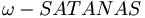

De: La Frikipedia, la enciclopedia extremadamente seria.
De: La Frikipedia, la enciclopedia extremadamente seria. De: La Frikipedia, la enciclopedia extremadamente seria.
«No es...¡No es el SATANAS contra el que luchamos antaño!»
~ Richelieu, moribundo por tercera vez.
«Sembraste tu propio fracaso.»
~ Cyberjesús a SATANAS II, en la Luna.
El SATANAS II fue la mejora tecnológica y sustituto del SATANAS I, proveniente de Francia.
En el año 2003, las Fuerzas del Mal se percataron de que el SATANAS I había quedado obsoleto ante las nuevas tecnologías. El robot era incapaz de ejercer su influencia en la Sociedad, y ésta se dedicó a hacer el bien al seguir las indicaciones de Jesús de Chamberí (aunque siempre había algún que otro rezagado). MonEsVol observaba orgulloso cómo las cosas parecían estar cambiando, puesto que apenas era necesario que lanzase rayos a la población y que realizase apariciones nocturnas para que la fe en él y en su tallarinesco poder tambalease. Era, sin lugar a duda, un período de hegemonía y esplendor en el que no había sitio para un malvado SATANAS I.
Pero las cosas no iban a quedar así: desde la capital del Terror por su tierra. Llegaron a la conclusión de que necesitaban un nuevo representante en la superficie, «Un representante para dominarlos a todos», apuntaba Sauron. Tal representante no podía ser otro que EL SUCESOR DEL SATANAS I.
En agosto de 2003, el SATANAS I descendió al Infierno para ser desmantelado.
Fueron las propias Fuerzas del Mal quienes aportaron el dinero necesario para la construcción. Fue tan costoso que si los resultados no eran los esperados, el Príncipe de las Tinieblas se haría con todas las Almas de los implicados en el proyecto (encargado a poderosas entidades que debían favores al Príncipe), como éstos habían acordado al firmar en el contrato (sin percatarse de lo que pasaría si fracasaran).
El contrato decía lo siguiente:

|
Despreciables seres mortales, es hora de que volváis a servir a vuestro Señor el Príncipe de las Tienieblas, Quien os encarga la construcción de un nuevo representante del Infierno. Hacedlo y vuestras deudas serán perdonadas. | 
|
| Burning Throne, a octubre de 2003 |
Como se puede apreciar, no se puede leer a simple vista la parte en la que se habla del tributo que cobraría el Príncipe en caso de que fracasasen.
Así, el Príncipe de las Tinieblas preparó la construcción de un nuevo robot que trajera el dolor y el pecado a la Tierra. Después de los proyectos fracasados SATANAS XP y SATANAS Vista, con los cojones en la garganta las entidades implicadas en la construcción del nuevo representante del Infierno se distribuyeron el trabajo armoniosamente para hacer una portentosa obra que hiciera temblar los cimientos de la Tierra.
Su construcción tuvo lugar en diversos astilleros europeos, que para no levantar polémica, comunicaron que se trataba de un experimento relacionado con los ciclos reproductivos de las ballenas.
En el año 2005, quedó terminado el robot. Podría decirse que se trataba de una especia de barco automatizado e independiente, programado específicamente para cumplir una serie de objetivos. Fue botado en Ferrol bajo el nombre . Sin embargo, una serie de errores en su comportamiento propició que fuese llevado de nuevo a los astilleros. Según las Fuerzas del Mal, era demasiado benévolo. Fundamentalmente, lo que se le hizo fue sustituir el software diseñado por Microsoft por el software propio del Infierno, conocido como "Infernal Mind Operatying System" (IMOS), caracterizado por una serie de Algoritmos destructores. Como Microsoft había fallado en su diseño, las Fuerzas del Mal arrebataron el alma a Bill Gates.
El robot definitivo se llamó SATANAS II y fue liberado de los astilleros el 25 de diciembre de 2006.
La base orgánica fue reforzada con una mezcla de titanio y diamante, para dotarle de las buenas propiedades que ambos materiales poseen. Poseía las características de tanto un acorazado, un submarino, como de una lanzadara espacial, puesto que estaba dotado de un sistema de propulsión a chorro que le permitía escapar de la gravitación terrestre.
Su armamento estaba compuesto por:
Fue un gran éxito para las Fuerzas del Mal, puesto que durante casi un milenio estuvo extendiendo el Enfermedad, el Oscuridad por toda la Tierra. Por si fuera poco, se le atribuyen los siguientes hechos:
El SATANAS II se propuso acabar con la Humanidad de una manera lenta y tortuosa. Por ello, en lugar de destruir la Tierra directamente, se limitó a empeorar las condiciones climatológicas. Su primer destino fue la Antártida, al cual llegaría sin levantar sospecha aprovechando que era una ballena. Allí se deleitó destruyendo los glaciares y dando muerte a toda forma de vida. El nivel del mar aumentó considerablemente, lo cual trajo consigo la extinción de las playas y constantes inundaciones debido a los desbordamientos de los ríos, entre otras catástrofes. Año 2048.
Tiempo más tarde (año 2463), tras aburrirse de las inundaciones, el SATANAS II puso rumbo a pulmones de la Tierra. Prendió fuego a toda la selva y contaminó el río con residuos radioactivos. Con la selva destruida, las proporciones de dióxido de carbono y demás contaminación en la atmósfera terrestre aumentaron hasta alcanzar unas cifras jamás vistas. Por otro lado, todas las especies autóctonas de la selva desaparecieron, aunque al SATANAS II lo único que le importaba era ver la cara de horror de los seres humanos, apenas menos despreciables para él que los Jilgueros y Mariposas que acababa de aniquilar. Pero su sed de destrucción no había terminado.
Pasaron casi cinco siglos y volvió a aburrirse de las mismas caras de sufrimiento. Como consecuencia, optó por realizar la tercera y última faena a la Tierra: destruir la capa protectora de los rayos ultravioleta del Sol, hecho que no le llevó ni dos días. Basta con decir que el invierno, la primavera y el otoño pasaron a ser uno con el verano.
Después de atacar las citadas zonas, era hora para el SATANAS II de provocar a Dios, quien todavía no había dado la cara por los humanos. Por ello, puso rumbo a Italia, con el objetivo de tomar El Vaticano para el Príncipe de las Tinieblas, y recibir así nuevos privilegios.
El SATANAS II hizo honor a su nombre, puesto que la resistencia ofrecida por los cardenales (liderados por Richelieu) fue tan heroica como en vano. Ratzinger Z no tardó en aparecer. Salió rompiendo violentamente la cúpula del monumento para cargar directamente contra el SATANAS II, quien recibió el impacto de lleno en el abdomen. En sus 900 años de vida, el SATANAS II fue abollado por primera vez. Asimismo, la antimateria generada por el Papa casi logra dejarlo ciego. Fue un combate intenso que terminó con la muerte de Ratzinger Z al recibir un acertado coletazo del SATANAS II que lo devolvió al agujero del monumento por el que había salido a combatir. No obstante, a pesar de que le costó su vida, había demostrado que una vez más, el representante del infierno podía ser derrotado, lo cual dio moral a los hombres.
El SATANAS II entregó El Vaticano a las Fuerzas del Mal en marzo del año 3000, tras haber pasado en él un siglo de descanso.
Los hombres, motivados por la intervención de Ratzinger Z, continuaron evolucionando tecnológicamente, puesto que gracias a él se sentían capaces de derrotar de una vez por todas al SATANAS II. Por consiguiente, al igual que su antecesor, el SATANAS II quedó obsoleto con el paso del tiempo, hecho que quedó reflejado históricamente en la denominada Batalla de Nador (año 3001), en la que el SATANAS II sería derrotado al ser gravemente dañado por el ejército de los Estados Confederados de América. La armadura de titanio y diamante que cubría el cuerpo de el SATANAS II fue por fin perforada (Ratzinger Z tan sólo logró abollarla), provocándole nada más y nada menos que una perforación que le atravesó de costado a costado. El representante del Infierno hubo de retirarse con el rabo entre las piernas por primera vez en sus 1000 años de vida. Se vio obligado a huir de la Tierra. Afortunadamente para él, encontró refugio no muy lejos de ella, en la Luna. Allí, gracias a una sucursal del Infierno abierta por las Fuerzas del Mal, se estuvo recuperando y recibió varias actualizaciones tecnológicas para poder hacer frente a los ejércitos humanos. El Príncipe de las Tinieblas negó nuevos privilegios al SATANAS II, como castigo por tan humillante derrota. Pensando en aquel lejano año 2006, se dijo «Debí haber acabado con la Tierra mientras pude».
En 3003, Cyberjesús llegó a la Luna en su Apolo CVXI. Su misión era la de destruir al SATANAS II para traer de nuevo la paz y el equilibrio a los Hombres. Ambos mantuvieron un combate a muerte durante tres días, en el que el SATANAS II, incapaz de asumir su derrota, acabaría por autodestruirse (creando así el mayor Agujero lunar) para tratar de matar a Cyberjesús. Hay quienes lo consideran un empate, pero objetivamente, la victoria fue de Cyberjesús. Las últimas palabras que se dijeron fueron las siguientes (Cyberjesús grabó la conversación en sus sistemas y más tarde pudo ser recuperada e interpretada):
Autor(es):